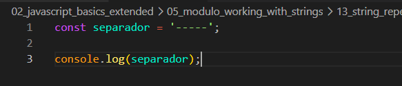
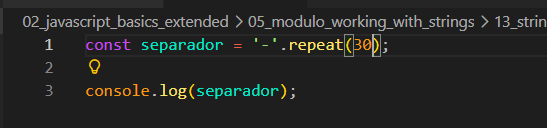

String repeat
Intro
Aqui teremos o seguinte codigo como exemplo:

Aqui teremos o seguinte codigo como exemplo:

Podemos observar que foi criado uma variavel com '-----' e sem seguinda imprimimos seu valor em nosso console.
Agora se quisermos por exemplo repetir esse separador para ter uma quantidade maior, nesses casos ficar fazendo manualmente pode acabar fazendo com que erramos a contagem ou se torne mais cansativo. Podemos resolver esse problema utilizando o metodo repeat.
Para utilizarmos podemos basicamente ao inves de usar varios tracos, usar apenas um com o metodo repeat e como parametro passamos um valor e esse valor ira representar o numero de vezes que ele ira se repetir. Ficando da seguinte forma:
